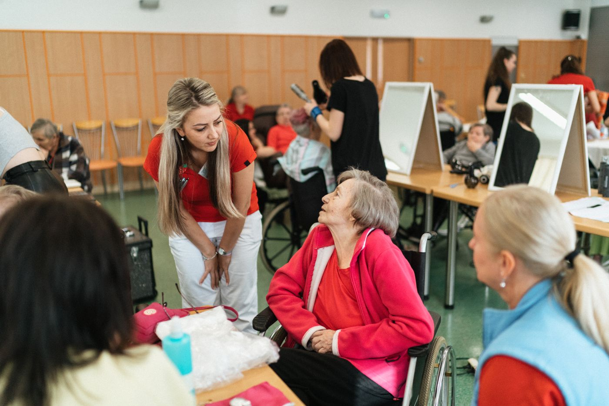

Community residential care
A residential setting for adults with disabilities, with foster care or supported living services. Beech Street is licensed for four adults age 18 and older.
Meet the Beech Street locationA PLACE TO LIVE. SUPPORT TO THRIVE.
Residential care and assisted living in St. Paul. Explore a setting that fits your needs—or the needs of someone you love.

OUR CARE
Choosing care starts with understanding the setting. Our two locations offer distinct services, so you can begin with the option most relevant to you.
A residential setting for adults with disabilities, with foster care or supported living services. Beech Street is licensed for four adults age 18 and older.
Meet the Beech Street locationHousing and supportive care for older adults. Darlene Street lists personal care, diabetic care, and foot or nail care, with services available 24 hours a day.
Meet the Darlene Street locationOUR LOCATIONS
Both locations serve Ramsey County. Contact us to discuss current openings, care needs, and arranging a visit.
Beech
Street
Listed waiver options
Brain Injury (BI), Community Access for Disability Inclusion (CADI), Community Alternative Care (CAC), and Developmental Disabilities (DD).
Darlene
Street
Listed payment options
BI, CADI, and Elderly Waiver (EW), plus private pay and long-term care insurance.
Waiver eligibility, age restrictions, coverage, and available services depend on the setting and individual needs. Please confirm these details with us and your case manager before planning a placement.
GETTING STARTED
Whether you're looking for yourself, a loved one, or a person you support, you can call to explore the next step.
Call (763) 670-5597Share the location you're interested in, the type of support needed, and your preferred timing.
Ask about current availability, services, rates, and the funding options that apply to your situation.
Discuss visiting the location and what information is needed to consider a placement.
HELPFUL TO KNOW
This website describes the Beech Street residential setting and Darlene Street assisted living location. Contact us directly to ask about any additional services.
Availability changes. Call (763) 670-5597 to ask about current openings and whether the setting can meet your needs.
Contact us for current rates and what they include. Payment options vary by location and eligibility; a listed waiver does not guarantee coverage or admission.
Review the Beech Street service listing or the Darlene Street service listing. Darlene Street's listing also links to its disclosure of services and amenities. Ask us for a current copy.
LET'S TALK
For placement questions, location information,
or to discuss care needs, get in touch.
Please keep your first email to general inquiries.
Call to discuss sensitive personal or health information.